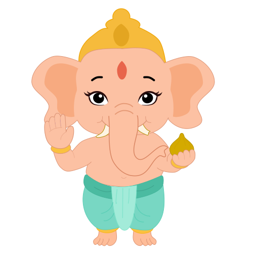
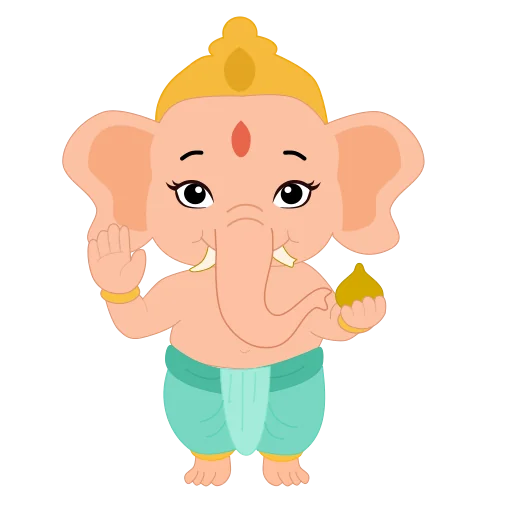
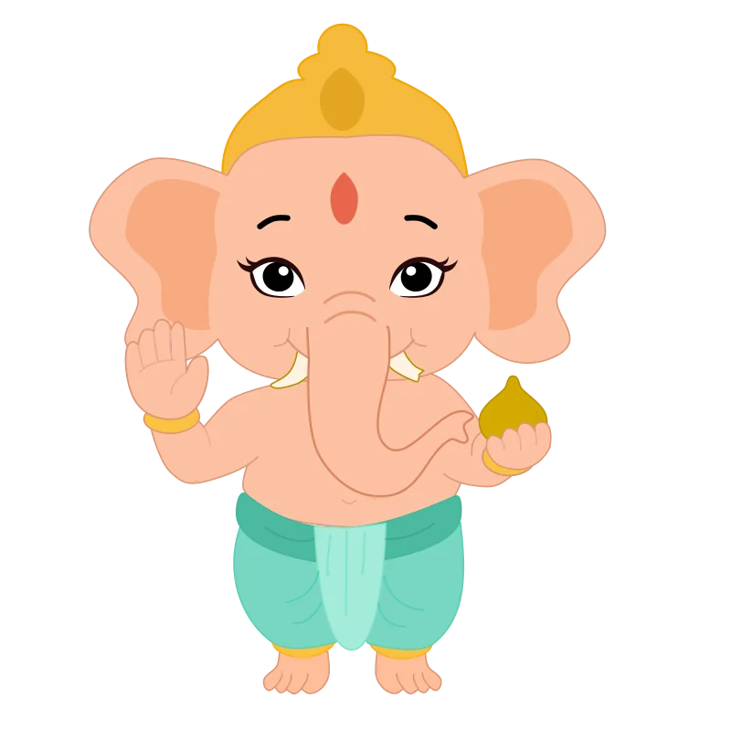

Shown at 200 px (the Dreams display size) on white, black and cream, plus a 4x zoom of the face. Candidates are lossy WebP rendered from the SVG. The edge flag comes from thin dark outlines being anti-aliased differently from the vector; check outlines and the face in the zoom.


